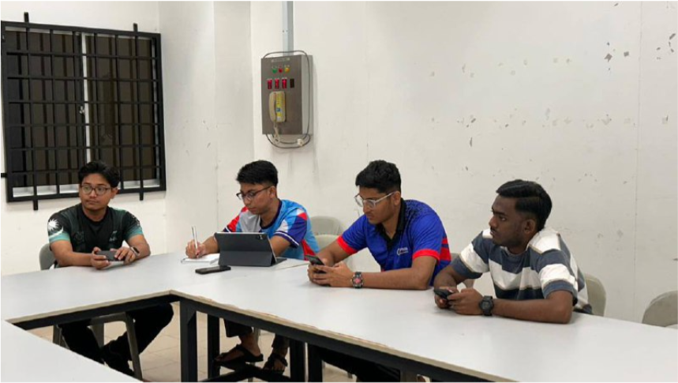
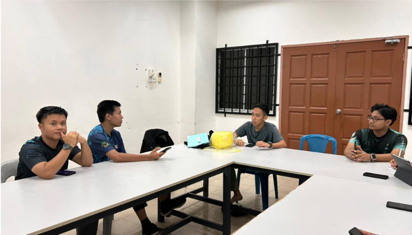
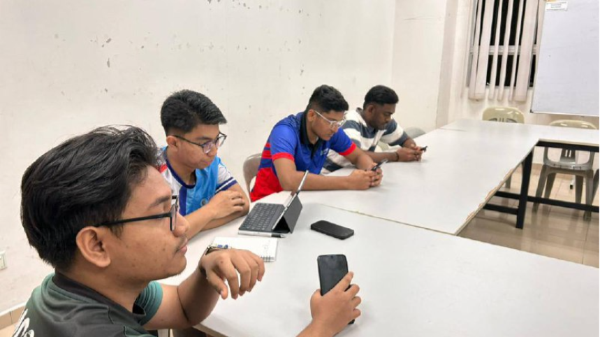
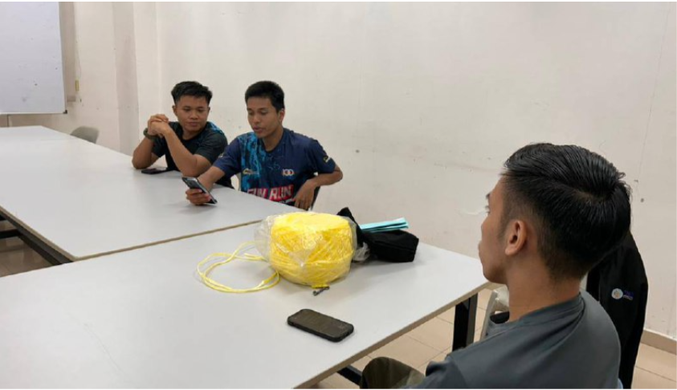

Lensa




1. Mesyuarat MTKT 1.0 [4 November 2024]
Bilik Mesyuarat PPKP : Telah berlangsung mesyuarat MTKT kali pertama (Bil. 1 2024/2025) antara semua ahli MTKT yang baharu. Mesyuarat ini membincangkan penyelarasn gerak kerja pemilihan ahli baharu MTKT sebagai exco MTKT, pemilihan Timbalan Setiausaha dan Bendahari, penyelarasan yuran dan baju ahli, serta perbincangan aktiviti-aktiviti anjuran MTKT yang boleh dijalankan. Timbalan Presiden (Muhammad Haikal Zhahirin bin Ab Rasid) mempengerusikan mesyuarat malam tadi. Semua agenda berjalan dengan lancar dan mesyuarat ditangguhkan pada jam 2145.